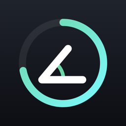

Foldly
Le compteur de plis de ton téléphone pliable
Ce que fait l'app
Foldly compte combien de fois tu fermes et ouvres ton téléphone pliable, pour voir tes habitudes et les garder sous contrôle : limite par jour, alertes, widgets, historique et records.
Compter toute la journée
Quand Foldly est à l'écran (intérieur ou extérieur), il lit lui-même la charnière. Quand il n'est pas à l'écran, iOS ne lui dit rien : une automatisation Raccourcis prend le relais.
- Ouvre l'app Raccourcis, onglet Automatisation, puis +.
- Choisis le déclencheur iPhone ouvert ou fermé (When iPhone is Opened or Closed) et garde seulement Fermé.
- Choisis Exécuter immédiatement et désactive la notification.
- Ajoute l'action Compter un pli (Foldly).
- Vérifie que l'automatisation est activée.
Chaque pli n'est compté qu'une fois, même si l'app est aussi à l'écran. Les widgets se mettent à jour en quelques minutes.
Questions fréquentes
Quelque chose s'affiche à chaque ouverture ? Dans Raccourcis, ouvre l'automatisation, touche l'action et désactive « Afficher lors de l'exécution » ; garde « Exécuter immédiatement » et désactive « Notifier lors de l'exécution ».
Pourquoi seulement « Fermé » ? Avec « Ouvert ou fermé », chaque ouverture compterait comme un pli. Fais deux automatisations : Fermé → Compter un pli, Ouvert → Compter une ouverture (pour le temps ouvert).
Les widgets ne bougent pas tout de suite ? C'est iOS qui décide quand ils se rafraîchissent ; ouvrir Foldly les met à jour.
Recommencer de zéro ? Réglages de l'app → Tout remettre à zéro.
Mon achat sur un autre iPhone ? Télécharge Foldly avec le même compte Apple, sans repayer.
Contact
Une question, un problème, une idée ? Écris à hfreecsapple@gmail.com. Réponse sous quelques jours.